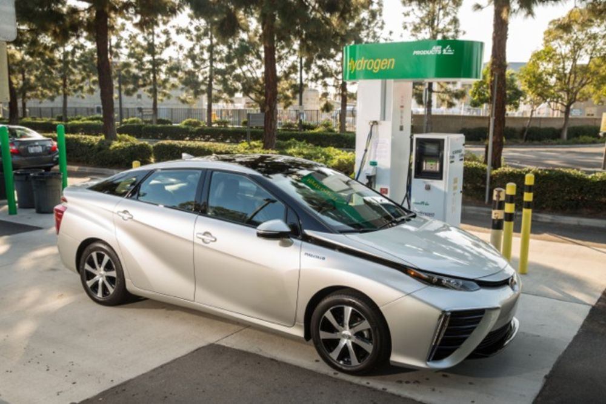
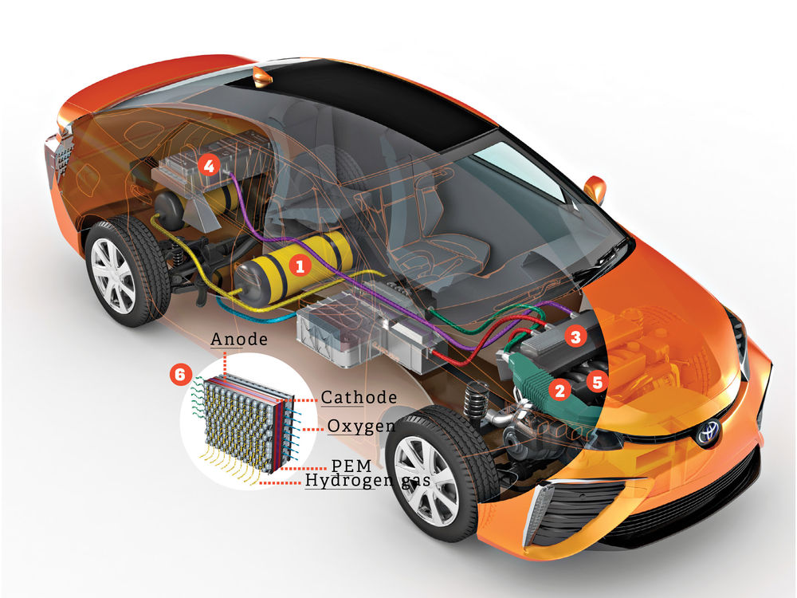

How It Works: THE TOYOTA MIRAI
In the past year, three automakers--Toyota, Honda, and Hyundai--have debuted new hydrogen cars. The biggest launch is likely the Toyota Mirai, which will hit U.S. streets this fall. Fuel cell vehicles (FCVs) have for years been the white whales of the clean-vehicle set. They emit only water; they fill in three minutes (vs. up to several hours for a traditional electric); and their range is comparable to gas-powered cars, about 300 miles. But automakers have avoided them, mainly because of infrastructure concerns: There are only a dozen hydrogen filling stations in the U.S., mostly in Southern California. That, too, is changing. Last year, the state set aside $200 million to build 100 more hookups by 2020. And that just may drive a national trend.
How It Works
1. Hydrogen Tank
Two carbon-fiber tanks store 11 pounds of hydrogen fuel under very high pressure (10,000 psi). In emergencies (e.g., a crash), sensors trigger shutoff valves to keep hydrogen from escaping the tank.
2. Airflow
The intake grill sends oxygen—a crucial component in the mix—to the fuel cell stack.
3.Power Control Unit
As the car’s energy manager and brain, the power control unit draws electricity from the fuel stack and sends it to the motor. During acceleration, it draws stored energy from the battery for an extra boost.
4.Battery
Unlike in traditional electric cars, the nickel-metal hydride battery in the Mirai stores only excess energy for use during ignition and acceleration.
5.Electric Motor
As electricity passes through the motor, it polarizes the stator—a stationary ring around the rotor—to create a rotating magnetic field. Magnets mounted on the rotor align with that field and spin at the same rate to power the drivetrain. The more electricity that’s sent to the motor, the faster the field spins and the faster the car goes. When braking and coasting, the motor generates electricity for the battery.
6.Fuel Cell
In their most basic form, fuel cells contain an anode, cathode, and a polymer electrolyte membrane (PEM). Because each cell generates little voltage on its own, engineers string them together in a series—or a stack. The Mirai’s stack contains 370 cells, each working to transform stored chemical energy into electricity. Here’s how.
In each cell, hydrogen runs through a flow field plate to the anode. There, a platinum-cobalt catalyst splits the hydrogen molecules into positively charged ions and negatively charged electrons.
Then, the PEM permits the hydrogen ions to pass through to the cathode, but it stops electrons, forcing them instead to travel an outer circuit, creating an electric current.
Finally, electrons and ions meet up with oxygen at the cathode to form water, which is emitted primarily as vapor.
©Popular Science 2015